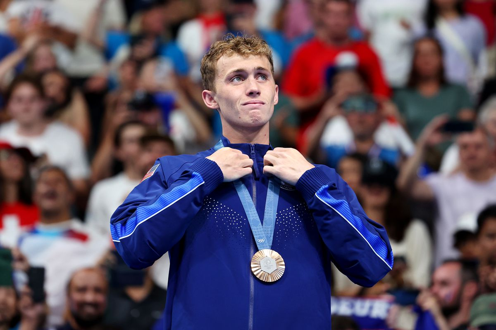

Not only did the USA win the most amount of gold and silver medals for this year's Olympics in swim, but they also won the most amount
of bronze medals as well! Unlike the previous categories where we saw a large gap betweem the male and female racers, this one was exactly even, having three men
and three women each bring home the bronze! Below, you can find the total outcomes of all six races that both men and female raced and what there times matched
to for the first and second placements.

Women's 400m Freestyle Final
| Athlete |
Time |
| Ariarne Titmus |
3:57.49 |
| Summer McIntosh |
3:10.35 |
| Katie Ledecky |
4:00.86 |
Men's 400m Individual Medley Final
| Athlete |
Time |
| Leon Marchand |
4:02.95 |
| Tomoyuki Matsushita |
4:08.62 |
| Carson Foster |
4:08.66 |
Women's 400m Individual Medley Final
| Athlete |
Time |
| Summer McIntosh |
4:27.71 |
| Katie Grimes |
4:33.40 |
| Emma Weyant |
4:34.93 |
Men's 200m Freestyle Final
| Athlete |
Time |
| David Popovici |
1:44.72 |
| Matthew Richards |
1:44.74 |
| Luke Hobson |
1:44.79 |
Men's 100m Backstroke Final
| Athlete |
Time |
| Thomas Ceccon |
52:00 |
| Jiayu Xu |
52:32 |
| Ryan Murphy |
52:39 |
Women's 100m Backstroke Final
| Athlete |
Time |
| Kaylee McKeown |
57:33 |
| Regan Smith |
57:66 |
| Katharine Berkoff |
57.98 |
Women's 800m Freestyle Final
| Athlete |
Time |
| Katie Ledecky |
8:11.04 |
| Ariarne Titmus |
8:12.29 |
| Paige Madden |
8:13.00 |